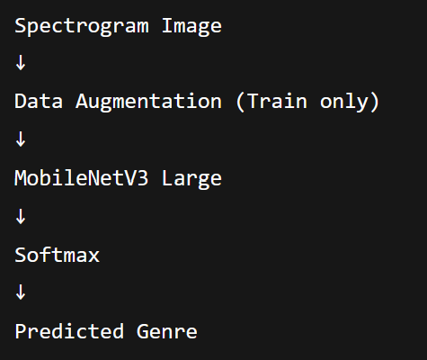
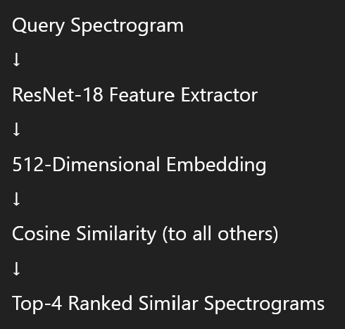
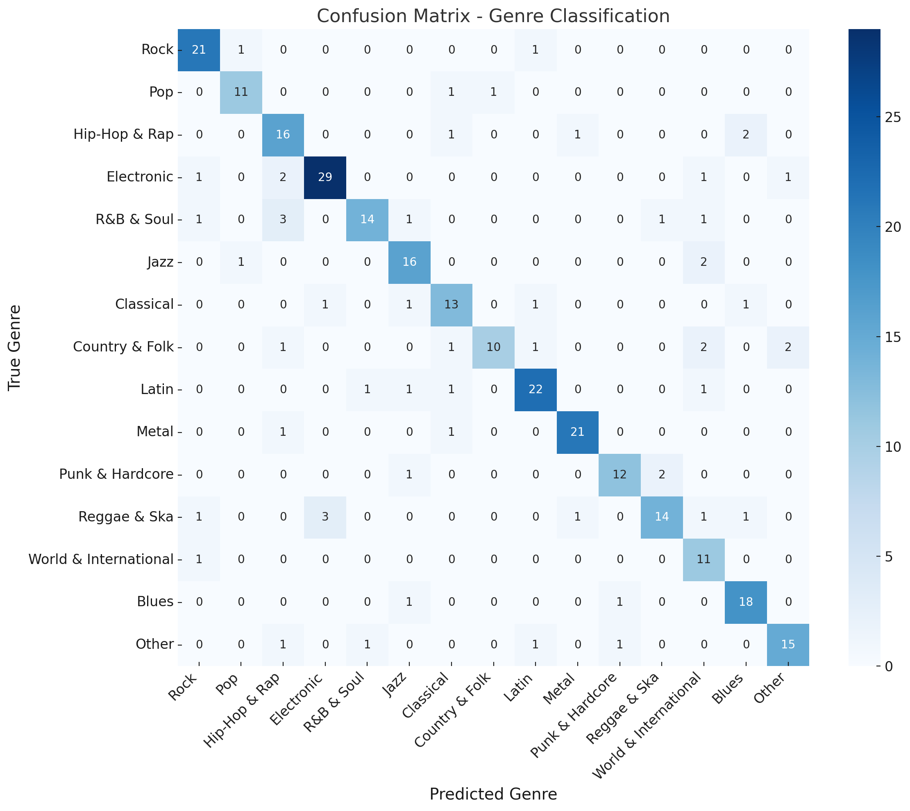
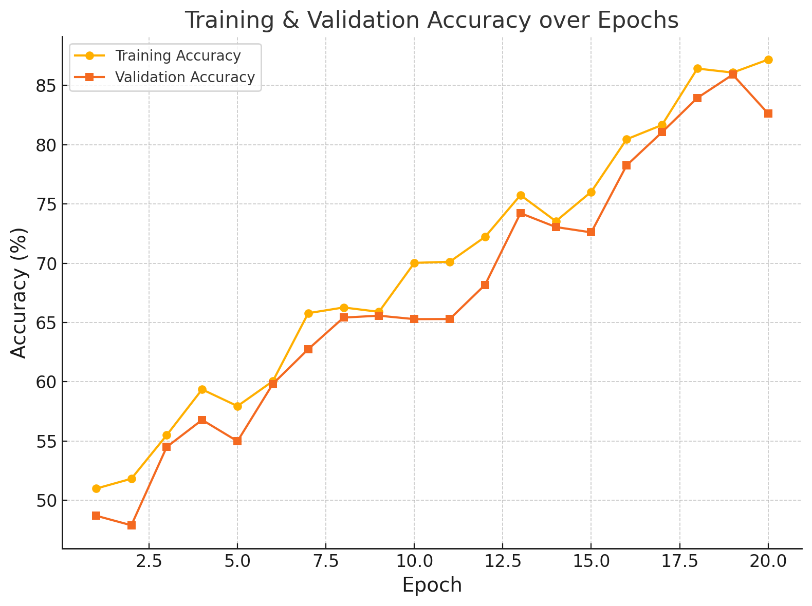
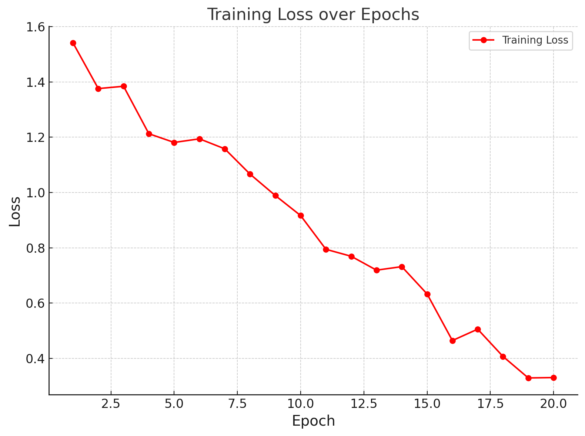
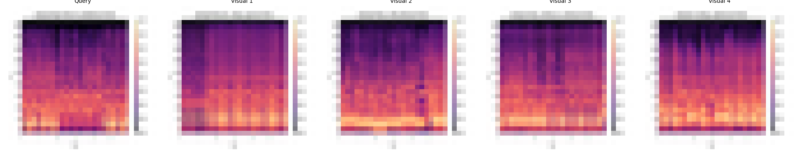

Modelling Report: Genre Classification, Similarity Search & Recommendation
This report documents the modelling work for music genre classification and spectrogram-based similarity search. Using spectrogram images and metadata, we developed and evaluated models for automatic genre prediction and visual similarity retrieval.
Initial situation
Aim of the Modelling
The goal of this modelling phase was twofold:
- Genre Classification: Develop a machine learning model capable of predicting the parent genre of a song based on its spectrogram representation.
- Similarity Search: Build a feature embedding system to identify visually similar spectrograms for content-based retrieval or music recommendation.
This aligns with the Data Mining Goals of exploring spectrogram-based learning for music information retrieval.
Data Set(s) and Feature Set
Datasets: Spectrogram images (PNG format) generated from audio tracks, split into:
train,val,testfolders (64x64 spectrograms).
Label source:
labeled_song_artists_grouped.csv15 parent genres defined:
Rock, Pop, Hip-Hop & Rap, Electronic, R&B & Soul, Jazz, Classical, Country & Folk, Latin, Metal, Punk & Hardcore, Reggae & Ska, World & International, Blues, Other
Independent Variables: RGB pixel values of spectrogram images, resized to 224x224 and normalized to [-1, 1].
Target Variable: Parent genre (multi-class classification with 15 categories).
Type of Models Used
| Task | Model | Library |
|---|---|---|
| Genre Classification | MobileNetV3 Large (transfer learning) | PyTorch (torchvision) |
| Similarity Search | ResNet-18 feature extractor + Cosine Similarity | PyTorch + scikit-learn |
Model Descriptions
Genre Classification Model
Overview
- Architecture: MobileNetV3 Large
- Modifications:
- Replaced classifier head with
Linear(in_features, 15) - Fine-tuned all layers (no freezing)
- Replaced classifier head with
- Libraries: torchvision.models, weights=
MobileNet_V3_Large_Weights.DEFAULT
Hyperparameters
| Parameter | Value |
|---|---|
| Batch Size | 32 |
| Epochs | 50 (early stopping: patience=5) |
| Learning Rate | 0.0003 |
| Optimizer | AdamW |
| Scheduler | CosineAnnealingLR (T_max=50) |
| Loss Function | CrossEntropyLoss (label_smoothing=0.1) |
| Input Image Size | 224x224 |
Data Augmentation
- Random Horizontal Flip
- Color Jitter (brightness and contrast ±0.2)
- Normalization: mean=[0.5,0.5,0.5], std=[0.5,0.5,0.5]
Code References
- Codebase:
genre_classifier_mobilenetv3_fixed.pth - Framework: PyTorch (torch==2.x, torchvision==0.15.x)
Pipeline Diagram

Similarity Search Model
Overview
- Architecture: ResNet-18 (final FC layer removed)
- Feature Dimension: 512
- Similarity Metric: Cosine similarity between feature vectors
- Libraries: torchvision.models, weights=
ResNet18_Weights.DEFAULT
Code References
- Computes embeddings for all spectrograms
- Ranks and retrieves top-4 visually similar spectrograms for a query
Output Artifacts
similar_songs_results/query.png: Original query spectrogramvisual_1.png…visual_4.png: Top-4 similar spectrogramssimilar_songs.txt: List of similar songs with similarity scorescollage.png: Collage of query + similar spectrograms
Pipeline Diagram

Results
Genre Classification
| Metric | Value |
|---|---|
| Test Accuracy | 83.5% |
| Best Val Accuracy | 85.2% |
| Early Stopping | Triggered at Epoch 37 |
Confusion Matrix

Training Progress
Plot of Training & Validation Accuracy over Epochs

Plot of Training Loss over Epochs

Similarity Search
Example Query Results
Query Song: Abigail_Christine_Hill_-_Backstabber_spectrogram.png
| Rank | Filename | Cosine Similarity |
|---|---|---|
| 1 | Marine_Drive_-_Tuesday_in_Japan_spectrogram.png | 0.9810 |
| 2 | Paranoia_-_Anthony_Rubery_spectrogram.png | 0.9809 |
| 3 | Amnesia_-_SloUCobra_a.k.a._Umberto_spectrogram.png | 0.9788 |
| 4 | LA_Scallywag_-_Hypotenuse_spectrogram.png | 0.9785 |
Collage

Model Interpretation
Classifier
- High accuracy for dominant genres (Rock, Pop).
- Confusions occur between genres with overlapping spectral features (Blues vs R&B & Soul).
Similarity Search
- Embeddings visually cluster spectrograms effectively.
- Note: visual similarity ≠ auditory similarity.
Conclusions and next steps
Key Findings
- The classifier reliably predicts parent genres from spectrograms.
- The similarity model retrieves visually close examples using embeddings.
Limitations
- Genre boundaries are fuzzy and dataset is imbalanced.
- Spectrograms omit rhythm and musical structure.
Extensions
- Fuse metadata with embeddings for hybrid recommendations.
- Explore larger architectures (e.g., ViT, EfficientNet).
- Use pretrained audio embeddings (CLAP, OpenL3).
Deployment Proposal
- Expose genre classifier as a REST API for tagging tracks.
Sample Project Sample Project Sample Project Sample Project